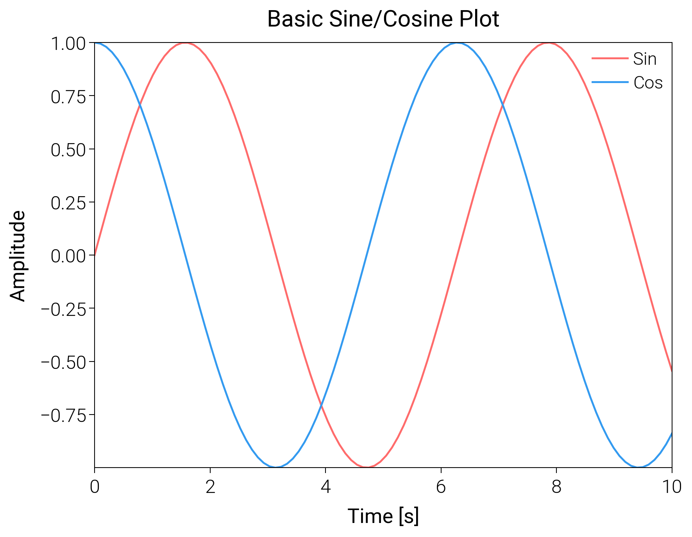

Note
Go to the end to download the full example code.
Basic Usage¶
This example demonstrates the basic usage of dartwork-mpl, including applying style presets and creating a simple plot.
import numpy as np
import matplotlib.pyplot as plt
import dartwork_mpl as dm
# Apply scientific style preset
dm.style.use_preset('scientific')
# Generate sample data
x = np.linspace(0, 10, 100)
y1 = np.sin(x)
y2 = np.cos(x)
# Create figure
# Use dm.cm2in to convert centimeters to inches for precise sizing
fig = plt.figure(figsize=(dm.cm2in(9), dm.cm2in(7)), dpi=200)
# Create axes using GridSpec with explicit margins
gs = fig.add_gridspec(
nrows=1, ncols=1,
left=0.17, right=0.95,
top=0.95, bottom=0.17
)
ax = fig.add_subplot(gs[0, 0])
# Plot data
# Use dartwork-mpl custom colors (dm.red5, dm.blue5)
ax.plot(x, y1, label='Sin', color='dm.red5', lw=0.7)
ax.plot(x, y2, label='Cos', color='dm.blue5', lw=0.7)
# Set labels and title with explicit font sizes
ax.set_xlabel('Time [s]', fontsize=dm.fs(0))
ax.set_ylabel('Amplitude', fontsize=dm.fs(0))
ax.set_title('Basic Sine/Cosine Plot', fontsize=dm.fs(1))
# Add legend with explicit parameters
ax.legend(loc='upper right', fontsize=dm.fs(-1), ncol=1)
# Optimize layout
dm.simple_layout(fig, gs=gs)
# Show plot
plt.show()
Total running time of the script: (0 minutes 0.282 seconds)